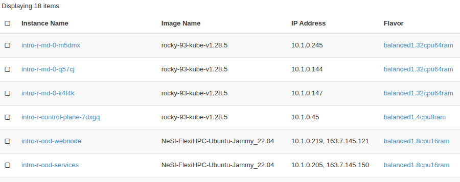

Deploying a training environment
Here we document the process for deploying a training environment on the NeSI Flexi HPC platform.
Details of how we have set up the project on Flexi HPC, the github repo, etc. are not covered here.
You need to have write permission on the training-environment GitHub repo to follow these steps.
Clone the git repo
Clone the repo if you don't already have it (if you do already have it just cd to the repo directory):
If you have already cloned the repo, make sure you commit or stash any local changes. Also, verify that your remote is set to the NeSI repo, e.g.
should show a URL with github.com:nesi/training-environment.git.
To check for changes in your local repo run:
If you have uncommitted changes you could stash them using:
It is also a good idea to start from the main branch to pick up the latest changes.
Configure the deployment
Create a new branch. The branch name will used in the URL for the training environment, so pick something short and relevant to the workshop (no special characters, _ , . etc.). For example, ml101, introtor, etc.
We need to edit two files to configure the environment:
Edit vars/ondemand-config.yml.example
- adjust
num_users_createandnum_trainers_create - set
control_plane_flavor(the is the controller node for the kubernetes cluster, no user sessions run on this node)- usually to
balanced1.4cpu8ramfor production balanced1.2cpu4ramis good for testing
- usually to
- set
cluster_worker_countandworker_flavorto have enough capacity for the number of users, e.g.cluster_worker_count: 2andworker_flavor: balanced1.32cpu64ramfor up to 30 2cpu4ram sessionscluster_worker_count: 3andworker_flavor: balanced1.32cpu64ramfor up to 45 2cpu4ram sessions
- adjust
ood_appsas required- check
versionandk8s_container - enable required apps (usually just leave them all enabled, except for containers)
- set which images to pre-pull (just choose the one you will be using, we have limited space currently on the worker nodes and pre-pulling will fail if you exhaust it)
- check
- set
enable_pod_prepullto "true"- sometimes we have experienced really slow image pulls, this will pre-pull the image and cache it so it is fast to start
- only pre-pull the app you are actually going to use, don't pre-pull them all as there might not be enough disk space on the worker nodes
Edit terraform/terraform.tfvars
- adjust
services_flavor_ide07cfee1-43af-4bf6-baac-3bdf7c1b88f84cpu8ram (usually used for testing)2d02e6a4-3937-4ed3-951a-8e27867ff53e8cpu16ram (usually used for production, should be good for around 40-50 users, haven't tested past that)674fa81a-69c7-4bf7-b3a9-59989fb6361816cpu32ram
- adjust
services_volume_size, must be big enough for all the user home directories plus some extra room- for example, if you have 20 users and expect to need 4 GB per user, then
services_volume_size: 160could be a safe choice (80 GB from 20x 4 GB and then doubling it to add some spare capacity and extra room for the OS
- for example, if you have 20 users and expect to need 4 GB per user, then
- adjust
webnode_flavor_ide07cfee1-43af-4bf6-baac-3bdf7c1b88f84cpu8ram (usually used for testing)2d02e6a4-3937-4ed3-951a-8e27867ff53e8cpu16ram (usually used for production, should be good for around 40-50 users, haven't tested past that)674fa81a-69c7-4bf7-b3a9-59989fb6361816cpu32ram
- should be fine to leave
webnode_volume_sizeat 30 GB
Commit the changes
Commit and push the changes to your branch, e.g.
git add terraform/terraform.tfvars vars/ondemand-config.yml.example
git commit -m "configuring environment for XXX workshop"
git push -u origin my-test-env
Deploy the environment
This is likely to change
Deployments are currently done via manually triggered GitHub actions.
Check there are enough resources
Before running a new deployment, let others know what you are planning via Slack to ensure there are enough resources in the training project
- Navigate to the deploy environment workflow here
- Under Run workflow select your branch (make sure you get the correct branch) and click "Run workflow"
Verify the deployment
There are instances where the GH workflow will run successfully yet the total number of worker nodes requested via cluster_worker_count: vars/ondemand-config.yml.example is absent from the deployment.
- We recommend verifying the state of deplyment via OpenStack dashboard (https://dashboard.cloud.nesi.org.nz/project/) >
NeSI-Training-Testproject >Instances. For an example, an app deployed with 3 xcluster_worker_countwill have 3 x `{branchname-md-0-XXXXX}

Destroy the environment
To destroy your environment after you have finished using it:
- Navigate to the destroy environment workflow here
- Under Run workflow select your branch (make sure you get the correct branch) and click "Run workflow"
Important
Double check that you have selected the correct branch
Deleting the branch when no longer needed
When you have finished running a particular training and have destroyed the environment with the above steps, we usually create a git tag from the branch, so we have a record of what has been run, see examples here.
From the branch in the git repo you could run
and then delete the branch.
Deploying vs destroying
Many changes can be redeployed on top of an existing deployment rather than destroying and deploying from scratch.
For example, with the following changes you can probably just rerun the deployment workflow and the changes will be applied to the existing environment:
- add a new app to
ood_apps - change the
versionof an existing app - change the
k8s_containerof an existing app - enable the pod pre-puller
- add additional users
However, in some cases you will need to destroy the existing environment and deploy a new one from scratch:
- change the flavor of the web or services node
- change the disk space of the web or services node
- change the number of k8s worker nodes
- change the flavor of the k8s worker nodes
- change the control plane flavour
The above lists are not exhaustive, they just provide some examples.